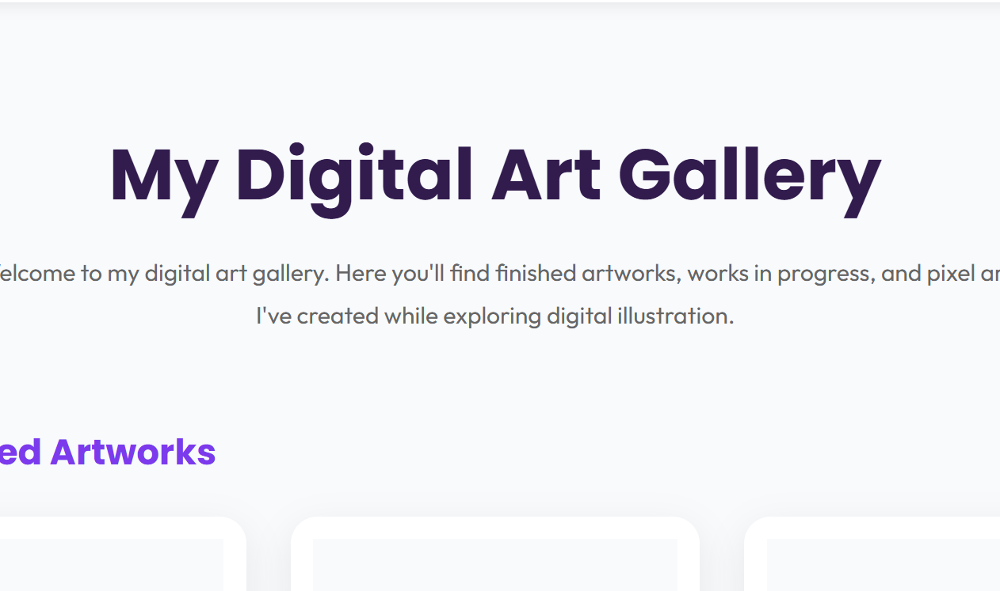

Student Portfolio Website
A responsive personal portfolio website built using HTML, CSS, and JavaScript to showcase my skills, achievements, and projects.
Here are some projects that showcase my journey in web development, creativity, and problem solving.
A responsive personal portfolio website built using HTML, CSS, and JavaScript to showcase my skills, achievements, and projects.

An interactive task planner that allows users to add, complete, and delete tasks using JavaScript.

A gallery displaying some of my digital artwork, creative illustrations, and artistic experiments.
These are projects I plan to develop as I continue expanding my cybersecurity knowledge, programming skills, and technical experience.
A Python-based tool that analyzes password security by checking password length, complexity, and common weaknesses while providing recommendations for stronger passwords.
A beginner networking project that explores devices, ports, and network visibility while developing a better understanding of network security concepts.
A personal learning environment focused on Linux administration, permissions, system security, and command-line skills.
A hands-on cybersecurity project involving the assessment of a simulated web application environment to identify vulnerabilities, analyze security risks, and recommend mitigation strategies.